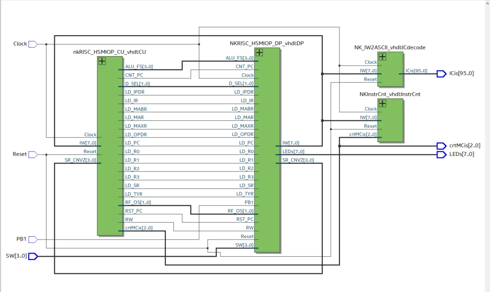
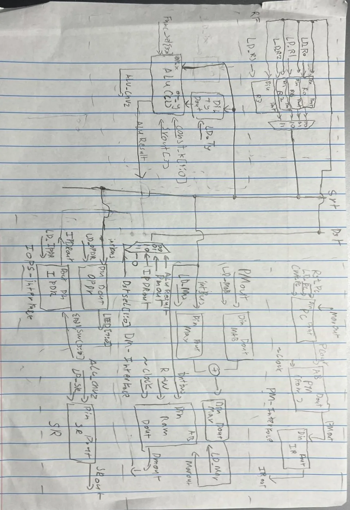
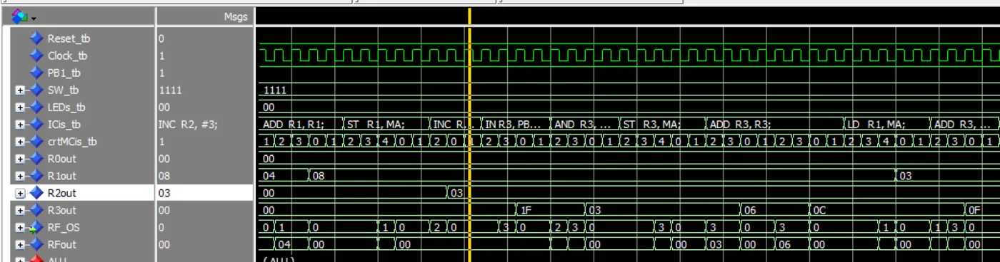

A RISC processor in VHDL
Course project, October to December 2025
Designed a reduced instruction set processor with Harvard architecture (separate program and data memory) and a two-bus datapath. It has a structurally built ALU, IN and OUT instructions for input and output, shift-left and rotate-through-carry instructions, and conditional jumps. I wrote the control unit and datapath in VHDL in Quartus Prime and verified them in ModelSim.
To prove the whole design worked, the processor ran a multiply program: given 15 from the switches, it worked through about 93 instructions and put 0xE1 (225) on the LEDs. Debugging meant tracing instructions cycle by cycle through waveforms and memory, including fixing a control unit bug that loaded the wrong register.





